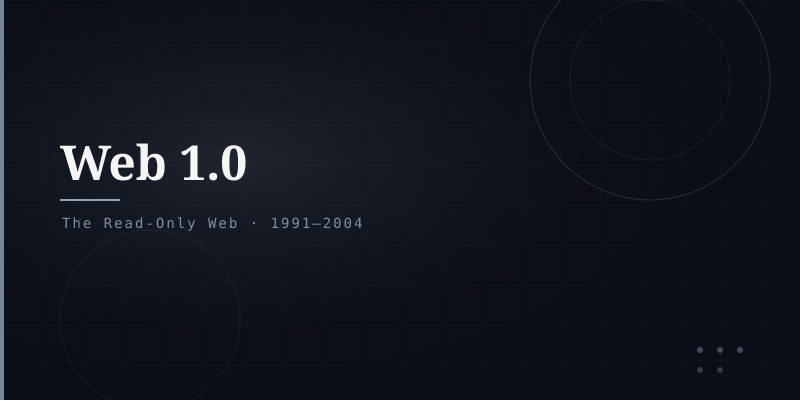

What is Web 1.0?
Web 1.0 refers to the first phase of the World Wide Web, roughly from its creation in 1991 to around 2004. It was characterised by static HTML pages, limited interactivity, and a model where content creators were a small minority and the vast majority of users simply read (consumed) content.
Key Characteristics
Content was fixed HTML files with no dynamic generation or personalisation.
Users consumed content; there was no commenting, uploading, or social interaction.
Dial-up modems at 56 Kbps; pages were mostly text with minimal images.
Pages connected via hyperlinks; no JavaScript interactivity, no AJAX.
Technology Stack
Static HTML files · Basic CSS · No server-side scripting (or very minimal) · GIF images · Frames and tables for layout · Limited forms · No cookies (early on).
Legacy
Web 1.0 established the foundational paradigm of the Web — the document model, hyperlinks, URLs, and HTTP. Its simplicity allowed rapid adoption. Most corporate web presence in the 1990s consisted of "brochureware" — digital versions of printed materials with no interactivity.